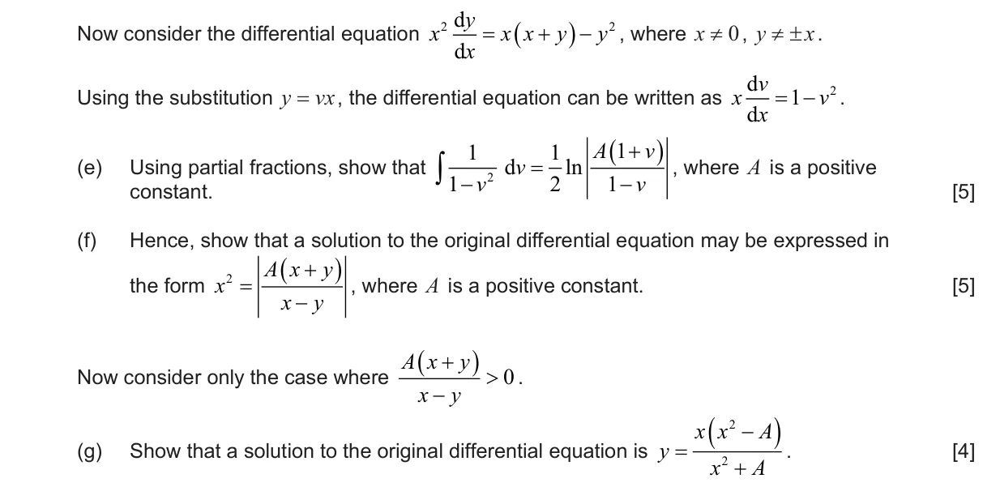
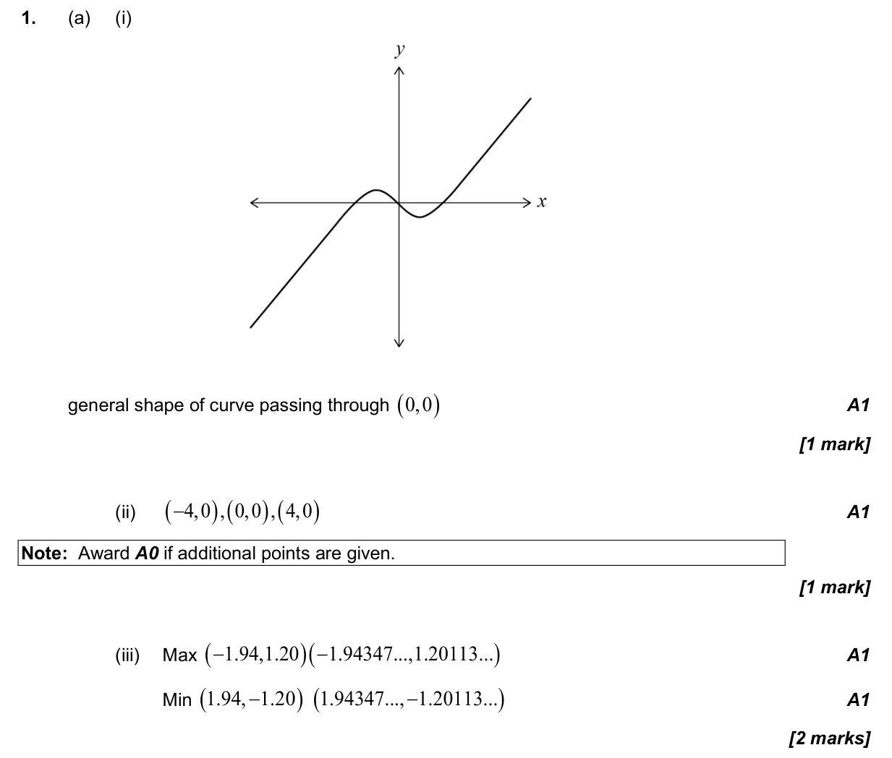
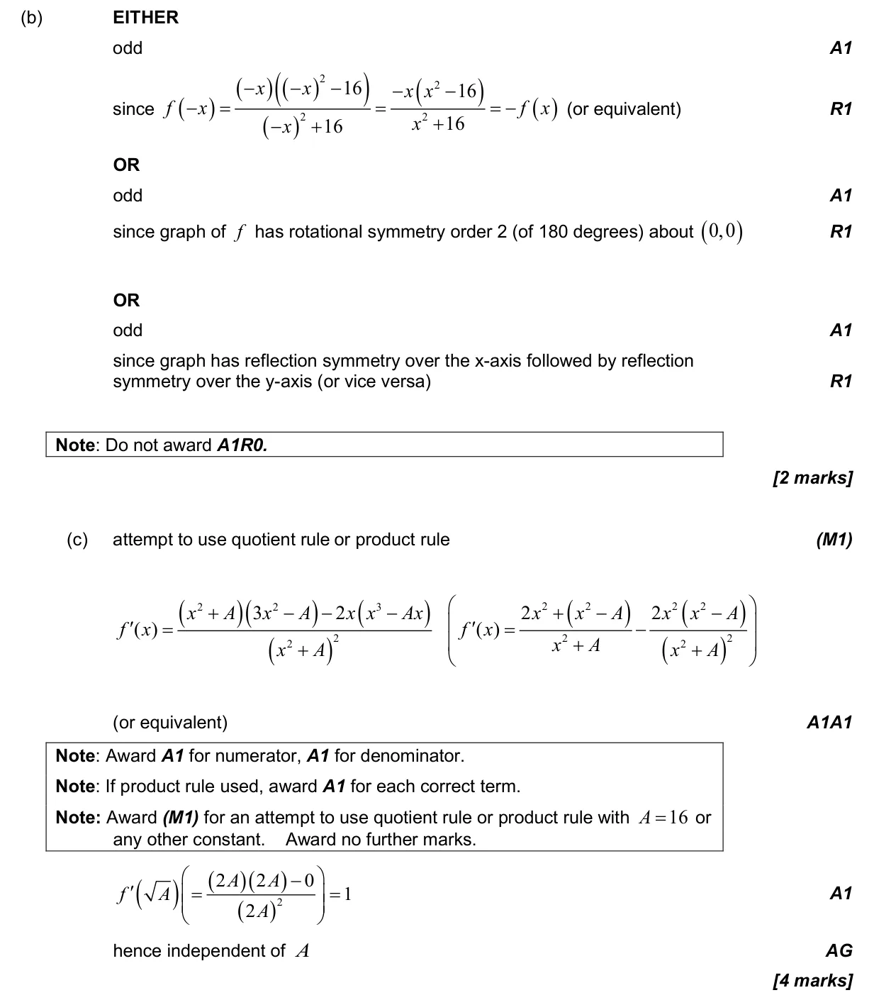
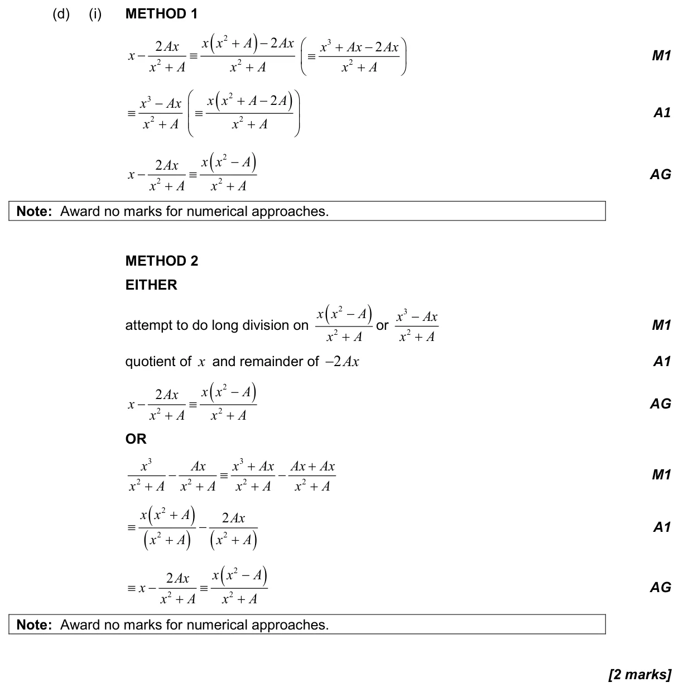
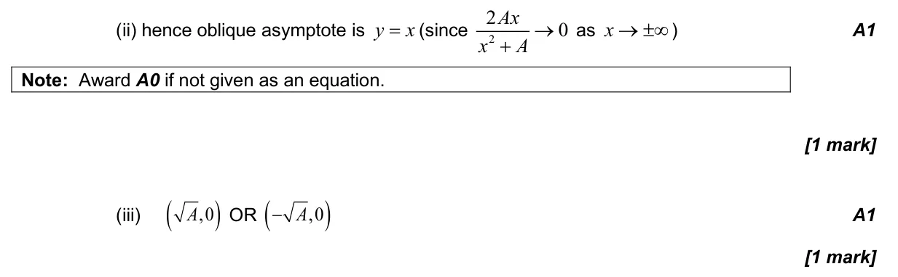
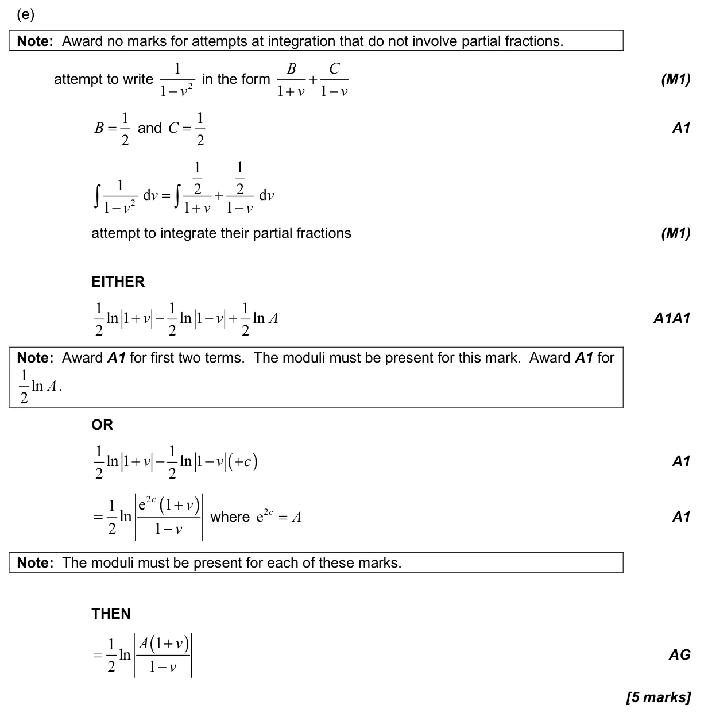
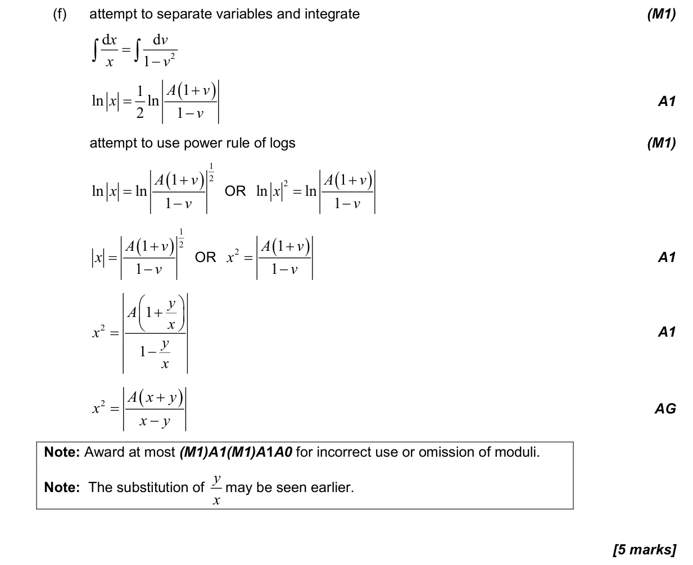
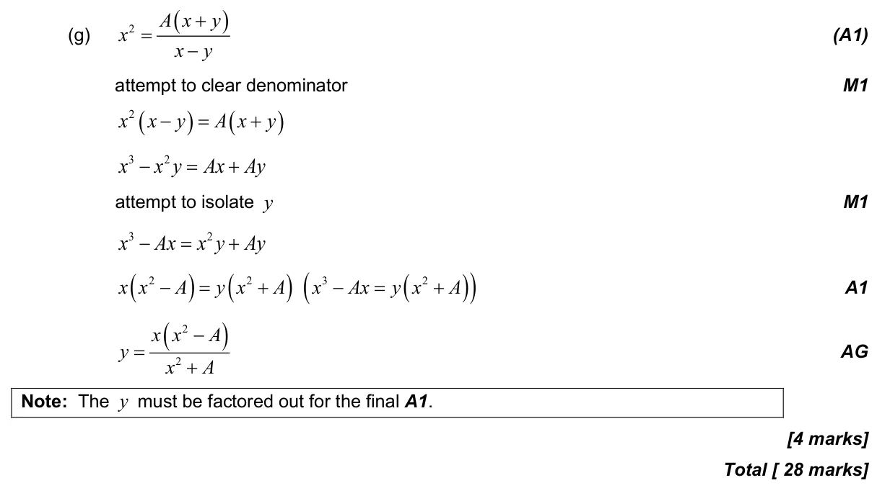

5.18 First-order differential equations5.6 Differentiating polynomials n in Q, chain, product and quotient rules2.13 Rational functions with a quadratic numerator or denominator2.4 Key features of graphs5.15 Further standard derivatives and integrals1.11 Partial fractions1.7 Laws of exponents and logarithms2.14 Odd and even functions, inverses with a restricted domain, self-inverse functions1.6 Simple deductive proof2.3 Graphs of functions5.4 Tangents and normals
Question


Markscheme






